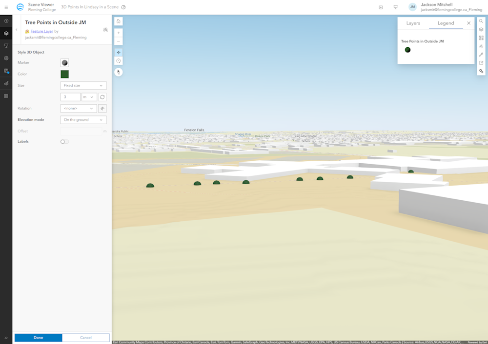
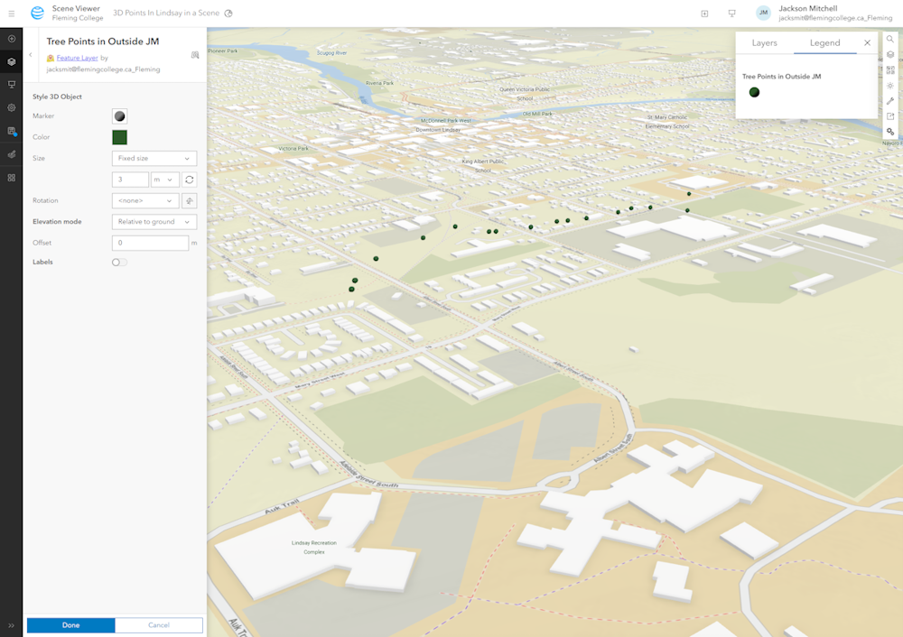
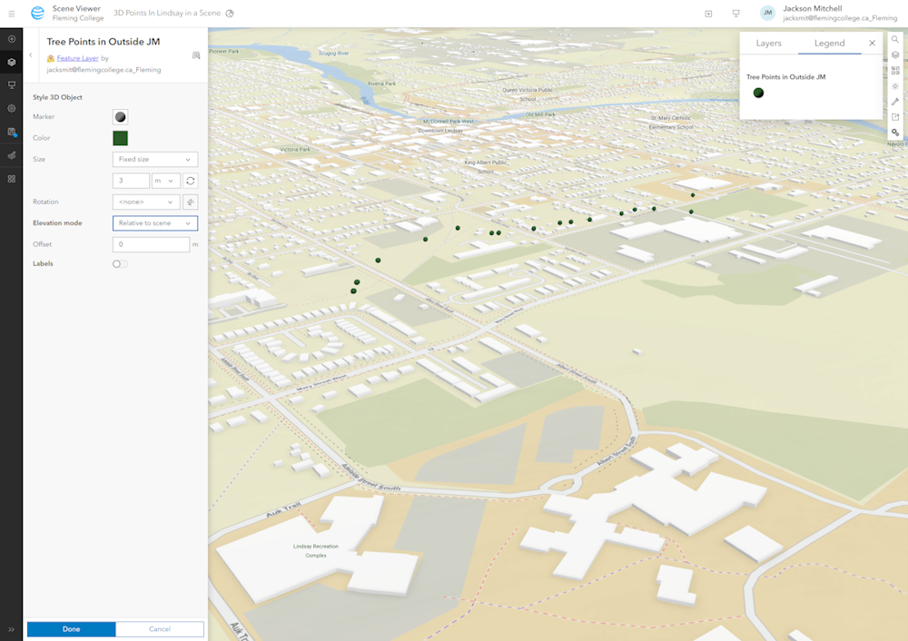
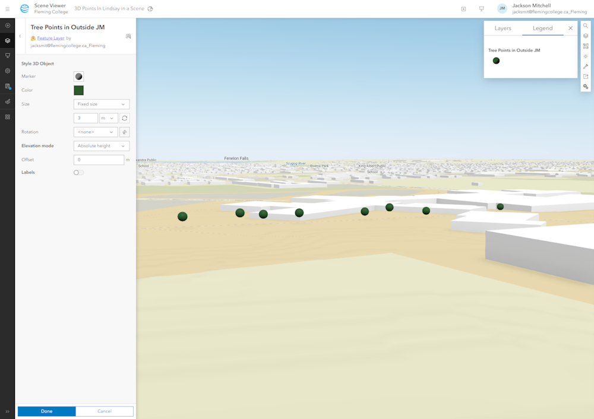
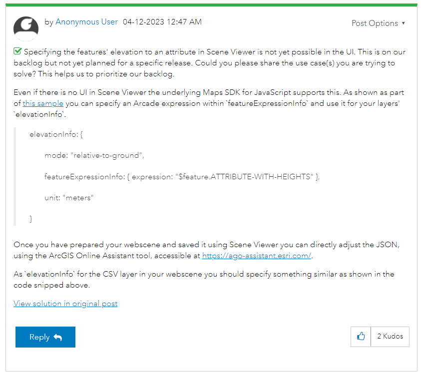

Trials
ArcGIS Pro
Overview
Embark on a transformative journey of Spatial Analysis with our team. We specialize in harnessing the transformative capabilities of ArcGIS to provide cutting-edge spatial analysis solutions. Our dedicated team of GIS experts is committed to assisting businesses, organizations, and government entities in leveraging location-based data for informed decision-making.

Overview
Embark on a transformative journey of Spatial Analysis with our team. We specialize in harnessing the transformative capabilities of ArcGIS to provide cutting-edge spatial analysis solutions. Our dedicated team of GIS experts is committed to assisting businesses, organizations, and government entities in leveraging location-based data for informed decision-making.
Experience Builder (AGOL)
Overview
Embark on a transformative journey of Spatial Analysis with our team. We specialize in harnessing the transformative capabilities of ArcGIS to provide cutting-edge spatial analysis solutions. Our dedicated team of GIS experts is committed to assisting businesses, organizations, and government entities in leveraging location-based data for informed decision-making.
Overview
Embark on a transformative journey of Spatial Analysis with our team. We specialize in harnessing the transformative capabilities of ArcGIS to provide cutting-edge spatial analysis solutions. Our dedicated team of GIS experts is committed to assisting businesses, organizations, and government entities in leveraging location-based data for informed decision-making.
Dashboards (AGOL)
Overview
ArcGIS Dashboards are a solution to present spatial information in a simple format.
Dashboards can display ArcGIS Onlines Scenes similar to how they display Webmaps.

In the Dashboard, Scenes can be interactive. For example, there are pop-ups on the data points. Also, they have the ability to make selecting surrounding elements create actions on the scene and other surrounding elements.

When items on the List element are selected. It is reflected in the chart and scene.

When items on the Chart element are selected. It is reflected in the list and scene.

One notable difference in having a scene in a dashboard rather than a webmap is an action can't be created to cause the surrounding elements to change based on what is in the view on the scene.

Scene Viewer (AGOL)
Overview
Scene viewer was the most tempting option for showcasing points in 3D from a hosted feature layer that could be updated from field maps or survey123. It had 3d basemaps with 3d building a topology that gave a general feeling of a 3D environment and allowed for different options to showcase how points elevation is display. The four options were "On the Ground", "Relative to the ground", "Relative to the Scene" and "absolute Height".
Screen Captures showcasing the Elevation settings
On the Ground
Relative to the ground
Relative to the Scene
Absolute Height

These four options serve different purposes and for the means to show 2d points all the options end up with the same result expect for absolute does not work without a z value. With The 3D points I used for testing it seamed that
the Absolute height yielded the most accurate results for our field map data. So I tried and added some points and editing the elevation field in the data to see the result. The edited showed no change to the scene view and no matter what changes i
made to the elevation field in the data it would not update in scene viewer. Testing this further trying to use survey123 data or data with a column that contain elevation/z data will not show changes in elevation at all in a 3D scene. The only one that
we tested that show elevation was the points collected with field maps.
The bellow Image shows a comparison between a untouched point and a edited point. One with the a elevation value of 260 and the other 300. Thee 260 being the unchanged and the 300 being the changed one. even with these changes the one set to 300
till appears lower than the one at 260. No matter the setting this was always the case.
Trouble Shooting Setting the Elevation value in Scene Viewer
The Next step was to take to google and figure out why this was happening. A couple google searches later and a bit of trouble shooting the answer arose. From a ESRI community form question, the answer was found. Setting the variable that is used to set the elevation value in Scene View is not in the UI and will pull a default no matter what (thats the reason only the field maps worked with z value). Unless you use ArcGIS Online Assistant and edit the json make the scene pull a variable value from your feature layer. Although there answer on the form was not 100% accurate and was missing brackets it did lead to the correct answer. Thus we were able to pull elevation data from any Feature layer and display those points in a 3D Scene.
Link and Image of ESRI Community Form
Conclusion on Scene Viewer
Overall felt like the best solution to our problem that we could find especially after we found the json edit workaround. A full walk through of how to edit the json using both the current and new beta ArcGIS Online Assistant will be showcased in our Solutions section of the website.